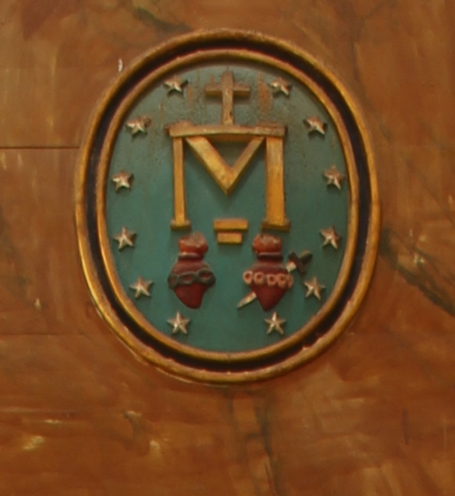

Aquest emblema és el revers de la Medalla Miraculosa tal com va ser revelada per la Verge Maria a santa Catalina Labouré. El formen una lletra “M” a la base d’una creu, el Sagrat Cor de Jesús (rodejat d’espines) i l’Immaculat Cor de Maria (rodejat de roses i travessat per una espasa), tot envoltat per un cercle de dotze estrelles. L’autor de l’altar de la Mare de Déu de la Medalla Miraculosa va ser Guillem Mas (s. XX)